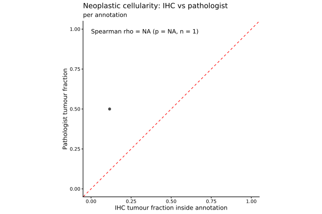
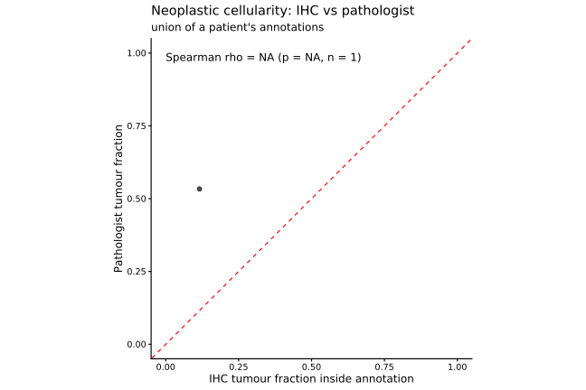

Last updated: 2026-07-05
Checks: 7 0
Knit directory: ihc_method/
This reproducible R Markdown analysis was created with workflowr (version 1.7.2). The Checks tab describes the reproducibility checks that were applied when the results were created. The Past versions tab lists the development history.
Great! Since the R Markdown file has been committed to the Git repository, you know the exact version of the code that produced these results.
Great job! The global environment was empty. Objects defined in the global environment can affect the analysis in your R Markdown file in unknown ways. For reproduciblity it’s best to always run the code in an empty environment.
The command set.seed(20260630) was run prior to running
the code in the R Markdown file. Setting a seed ensures that any results
that rely on randomness, e.g. subsampling or permutations, are
reproducible.
Great job! Recording the operating system, R version, and package versions is critical for reproducibility.
Nice! There were no cached chunks for this analysis, so you can be confident that you successfully produced the results during this run.
Great job! Using relative paths to the files within your workflowr project makes it easier to run your code on other machines.
Great! You are using Git for version control. Tracking code development and connecting the code version to the results is critical for reproducibility.
The results in this page were generated with repository version 3e16177. See the Past versions tab to see a history of the changes made to the R Markdown and HTML files.
Note that you need to be careful to ensure that all relevant files for
the analysis have been committed to Git prior to generating the results
(you can use wflow_publish or
wflow_git_commit). workflowr only checks the R Markdown
file, but you know if there are other scripts or data files that it
depends on. Below is the status of the Git repository when the results
were generated:
Ignored files:
Ignored: .Rproj.user/
Ignored: data/
Ignored: renv/library/
Ignored: renv/staging/
Note that any generated files, e.g. HTML, png, CSS, etc., are not included in this status report because it is ok for generated content to have uncommitted changes.
These are the previous versions of the repository in which changes were
made to the R Markdown (analysis/clinical_data.Rmd) and
HTML (docs/clinical_data.html) files. If you’ve configured
a remote Git repository (see ?wflow_git_remote), click on
the hyperlinks in the table below to view the files as they were in that
past version.
| File | Version | Author | Date | Message |
|---|---|---|---|---|
| Rmd | 74d9591 | bolt3x | 2026-07-05 | :sparkles: created the bulkRNA and clinical based analysis |
| Rmd | b70ccb2 | sceriff0 | 2026-07-05 | :rocket: created repo scaffold |
Validate the FlowPath IHC readout against the pathologist. Two independent checks:
neoplastic_data
estimate. Cell membership in the annotation is recomputed from the raw
geojson with sf (not the CSV Out_of_annotation
flag), and reported both per-annotation and over the dissolved
union.HOT score /
Immuno-phenotype.RESPONSE, and survival
(OS, PFS). A genuine immune readout should
track peripheral lymphocytes, better response, and longer survival.Tumour cell = phenotype_clean containing “Tumor”
(PANCK+Tumor, VIM+Tumor).
Checks 1–2 use the annotation region (sf); check 3 uses whole-slide IHC immune metrics so it covers every imaged patient, not only the handful with pathologist annotations.
# Only need annotations for patients the pathologist scored.
neo_ids <- norm_id(neoplastic_data$SAMPLE)
annots <- load_annotations(patient_ids = neoplastic_data$SAMPLE)
cat("annotation polygons loaded:", nrow(annots),
"for", dplyr::n_distinct(annots$patient_id), "patients\n")annotation polygons loaded: 11 for 4 patientsihc_ids <- unique(norm_id(ihc_data$patient_id))
shared_ids <- intersect(neo_ids, ihc_ids)
cat("patients with BOTH IHC cells and pathologist score:", length(shared_ids), "\n")patients with BOTH IHC cells and pathologist score: 5 if (length(shared_ids) == 0)
warning("no overlap between ihc_data patients and neoplastic_data — check IDs")The pathologist scores tumour content per annotation
(ANNOTATION_1..3). Compare against the IHC tumour fraction
computed inside the matching polygon.
ihc_tumor_per_ann <- ihc_annotation_metrics(ihc_data, annots, scope = "per_annotation")
ihc_tumor_union <- ihc_annotation_metrics(ihc_data, annots, scope = "union")
path_long <- neoplastic_data |>
mutate(patient_id = norm_id(SAMPLE)) |>
pivot_longer(starts_with("ANNOTATION_"),
names_to = "annotation", values_to = "path_pct") |>
filter(!is.na(path_pct)) |>
mutate(path_frac = path_pct / 100)
# Per-annotation concordance (join on patient + annotation index).
cc_ann <- ihc_tumor_per_ann |>
inner_join(path_long, by = c("patient_id", "annotation")) |>
filter(!is.na(tumor_over_inside), !is.na(path_frac))
# Union concordance: pathologist reference = mean of that patient's annotations.
path_union <- path_long |>
group_by(patient_id) |>
summarise(path_frac = mean(path_frac), .groups = "drop")
cc_union <- ihc_tumor_union |>
inner_join(path_union, by = "patient_id") |>
filter(!is.na(tumor_over_inside), !is.na(path_frac))
cat("per-annotation pairs:", nrow(cc_ann), " | union (per-patient) pairs:", nrow(cc_union), "\n")per-annotation pairs: 1 | union (per-patient) pairs: 1 plot_concordance <- function(df, subtitle) {
st <- paired_spearman(df$tumor_over_inside, df$path_frac)
ggplot(df, aes(tumor_over_inside, path_frac)) +
geom_abline(slope = 1, linetype = "dashed", colour = "red") +
geom_point(alpha = 0.7, size = 2) +
coord_equal(xlim = c(0, 1), ylim = c(0, 1)) +
annotate("text", x = 0, y = 1, hjust = 0, vjust = 1,
label = sprintf("Spearman rho = %.2f (p = %.3g, n = %d)",
st$rho, st$p, st$n)) +
labs(title = "Neoplastic cellularity: IHC vs pathologist", subtitle = subtitle,
x = "IHC tumour fraction inside annotation",
y = "Pathologist tumour fraction") +
theme_classic(base_size = 12)
}
if (nrow(cc_ann) > 0) print(plot_concordance(cc_ann, "per annotation"))
if (nrow(cc_union) > 0) print(plot_concordance(cc_union, "union of a patient's annotations"))
Bland–Altman agreement (both quantities are on the same 0–1 scale, so the difference vs mean shows systematic bias, not just rank correlation).
if (nrow(cc_union) > 2) {
ba <- cc_union |>
transmute(mean_val = (tumor_over_inside + path_frac) / 2,
diff_val = tumor_over_inside - path_frac)
bias <- mean(ba$diff_val); loa <- 1.96 * sd(ba$diff_val)
ggplot(ba, aes(mean_val, diff_val)) +
geom_hline(yintercept = bias, colour = "blue") +
geom_hline(yintercept = bias + c(-loa, loa), linetype = "dashed", colour = "grey40") +
geom_point(alpha = 0.7, size = 2) +
labs(title = "Bland–Altman: IHC − pathologist tumour fraction",
subtitle = sprintf("bias = %.3f, limits of agreement +/- %.3f", bias, loa),
x = "mean of the two", y = "IHC − pathologist") +
theme_classic(base_size = 12)
}IHC immune infiltrate = CD45+ (and lineage) fractions inside the
tumour region (union of annotations). Compare against the clinician’s
HOT score (continuous) and Immuno-phenotype
(categorical).
clin <- clinical_data |>
mutate(patient_id = norm_id(`ID CRF PRESERVE`)) |>
select(patient_id,
hot_score = any_of("HOT score"),
immuno_phe = any_of("Immuno-phenotype"))
infiltrate <- ihc_tumor_union |>
select(patient_id, cd45_over_inside, frac_CD8T, frac_CD4T, frac_Treg, frac_NK) |>
inner_join(clin, by = "patient_id")
cat("patients with IHC infiltrate + clinical immune phenotype:", nrow(infiltrate), "\n")patients with IHC infiltrate + clinical immune phenotype: 0 if ("hot_score" %in% names(infiltrate) &&
sum(is.finite(suppressWarnings(as.numeric(infiltrate$hot_score)))) > 2) {
df <- infiltrate |> mutate(hot_score = suppressWarnings(as.numeric(hot_score)))
st <- paired_spearman(df$cd45_over_inside, df$hot_score)
ggplot(df, aes(cd45_over_inside, hot_score)) +
geom_point(alpha = 0.7, size = 2) +
geom_smooth(method = "lm", se = FALSE, colour = "steelblue", formula = y ~ x) +
annotate("text", x = -Inf, y = Inf, hjust = -0.1, vjust = 1.5,
label = sprintf("Spearman rho = %.2f (p = %.3g, n = %d)",
st$rho, st$p, st$n)) +
labs(title = "Immune infiltrate vs clinical HOT score",
x = "IHC CD45+ fraction inside tumour region", y = "clinical HOT score") +
theme_classic(base_size = 12)
}if ("immuno_phe" %in% names(infiltrate) &&
dplyr::n_distinct(na.omit(infiltrate$immuno_phe)) > 1) {
df <- infiltrate |>
pivot_longer(c(cd45_over_inside, frac_CD8T, frac_CD4T, frac_Treg, frac_NK),
names_to = "ihc_metric", values_to = "frac") |>
filter(!is.na(immuno_phe), !is.na(frac))
ggplot(df, aes(immuno_phe, frac, colour = immuno_phe)) +
geom_boxplot(outlier.shape = NA) +
geom_jitter(width = 0.2, alpha = 0.6) +
facet_wrap(~ ihc_metric, scales = "free_y") +
labs(title = "IHC infiltrate metrics by clinical immuno-phenotype",
x = NULL, y = "fraction inside tumour region", colour = "Immuno-phenotype") +
theme_classic(base_size = 11) +
theme(axis.text.x = element_text(angle = 30, hjust = 1))
}Whole-slide IHC immune metrics per patient (covers every imaged patient, not just the annotated ones): lineage fractions over all cells plus CD45/CD8/FOXP3 positive-cell fractions.
ihc_lin <- ihc_lineage_fraction(ihc_data) |>
filter(lineage %in% comparable_lineages) |>
select(patient_id, lineage, frac) |>
pivot_wider(names_from = lineage, values_from = frac, values_fill = 0)
ihc_mk <- ihc_marker_fraction(ihc_data) |>
select(patient_id, any_of(c("CD45_posfrac", "CD8_posfrac", "FOXP3_posfrac")))
ihc_immune <- full_join(ihc_lin, ihc_mk, by = "patient_id")
# Full clinical table on the shared key. Keep the columns the QC below uses.
clin_full <- clinical_data |>
mutate(patient_id = norm_id(`ID CRF PRESERVE`))
ihc_clin <- ihc_immune |> inner_join(clin_full, by = "patient_id")
cat("patients with whole-slide IHC immune metrics + clinical row:", nrow(ihc_clin), "\n")patients with whole-slide IHC immune metrics + clinical row: 0 # Primary IHC immune summary used throughout: CD45+ fraction if present, else CD8T.
# Guarded because a lineage that never occurs would leave no pivoted column.
score_col <- intersect(c("CD45_posfrac", "CD8T"), names(ihc_clin))[1]
ihc_clin$ihc_immune_score <- if (!is.na(score_col)) ihc_clin[[score_col]] else NA_real_A real tissue immune infiltrate should track the patient’s circulating lymphocytes and run opposite to the neutrophil-to-lymphocyte ratio (NLR); the prognostic nutritional index (PNI) is a related systemic-immunity/nutrition score.
blood <- ihc_clin |>
transmute(
patient_id, ihc_immune_score,
lymphocytes = suppressWarnings(as.numeric(`BASAL VALUE OF LYMPHOCYTES`)),
neutrophils = suppressWarnings(as.numeric(`BASAL VALUE OF NEUTROPHILS`)),
pni = suppressWarnings(as.numeric(`PROGNOSTIC NUTRITIONAL INDEX`))
) |>
mutate(nlr = neutrophils / lymphocytes)
blood_long <- blood |>
pivot_longer(c(lymphocytes, nlr, pni), names_to = "blood_metric", values_to = "value") |>
filter(is.finite(ihc_immune_score), is.finite(value))
if (nrow(blood_long) > 2) {
labs_tbl <- blood_long |>
group_by(blood_metric) |>
group_modify(~ paired_spearman(.x$ihc_immune_score, .x$value)) |>
mutate(lab = sprintf("rho = %.2f (p = %.3g, n = %d)", rho, p, n))
ggplot(blood_long, aes(ihc_immune_score, value)) +
geom_point(alpha = 0.7, size = 2) +
geom_smooth(method = "lm", se = FALSE, colour = "steelblue", formula = y ~ x) +
geom_text(data = labs_tbl, aes(x = -Inf, y = Inf, label = lab),
hjust = -0.05, vjust = 1.4, inherit.aes = FALSE, size = 3) +
facet_wrap(~ blood_metric, scales = "free_y") +
labs(title = "IHC immune score vs peripheral-blood immunity",
x = "IHC immune score (CD45+ fraction)", y = NULL) +
theme_classic(base_size = 11)
}Immunologically “hot” tumours tend to respond better to induction chemotherapy.
if ("RESPONSE" %in% names(ihc_clin)) {
df <- ihc_clin |>
filter(!is.na(RESPONSE), is.finite(ihc_immune_score)) |>
mutate(RESPONSE = fct_infreq(as.character(RESPONSE)))
if (dplyr::n_distinct(df$RESPONSE) > 1 && nrow(df) > 3) {
ggplot(df, aes(RESPONSE, ihc_immune_score, colour = RESPONSE)) +
geom_boxplot(outlier.shape = NA) +
geom_jitter(width = 0.2, alpha = 0.6) +
labs(title = "IHC immune score by induction response",
x = NULL, y = "IHC immune score (CD45+ fraction)") +
theme_classic(base_size = 12) +
theme(axis.text.x = element_text(angle = 30, hjust = 1), legend.position = "none")
}
}Kaplan–Meier by median split of the IHC immune score, plus a
univariable Cox HR on the continuous score, for OS and
PFS.
Assumption to verify: the time columns are
OS / PFS (numeric months) and the event
columns are FOLLOW UP (death) /
PERSISTENCE OR RELAPSE? (progression).
coerce_event() maps common encodings (yes/no, alive/dead,
1/0) to 0/1 — adjust surv_cfg if your coding differs.
surv_cfg <- list(
OS = list(time = "OS", event = "FOLLOW UP"),
PFS = list(time = "PFS", event = "PERSISTENCE OR RELAPSE?")
)
coerce_event <- function(x) {
if (is.numeric(x)) return(as.integer(x > 0))
v <- tolower(trimws(as.character(x)))
dplyr::case_when(
v %in% c("1","yes","y","dead","death","deceased","event","relapse",
"progression","progressed","true") ~ 1L,
v %in% c("0","no","n","alive","ned","censored","false") ~ 0L,
TRUE ~ NA_integer_
)
}
run_survival <- function(cfg, label) {
if (!requireNamespace("survival", quietly = TRUE)) {
message("survival package not installed — skipping ", label); return(invisible())
}
if (!all(c(cfg$time, cfg$event) %in% names(ihc_clin))) {
message("missing ", cfg$time, "/", cfg$event, " — skipping ", label); return(invisible())
}
d <- ihc_clin |>
transmute(ihc_immune_score,
.time = suppressWarnings(as.numeric(.data[[cfg$time]])),
.event = coerce_event(.data[[cfg$event]])) |>
filter(is.finite(.time), !is.na(.event), is.finite(ihc_immune_score))
if (nrow(d) < 5 || dplyr::n_distinct(d$.event) < 2) {
message("too few informative rows for ", label, " (n = ", nrow(d), ")"); return(invisible())
}
d <- d |> mutate(immune_group = if_else(ihc_immune_score >= median(ihc_immune_score),
"IHC-immune high", "IHC-immune low"))
fit <- survival::survfit(survival::Surv(.time, .event) ~ immune_group, data = d)
cox <- survival::coxph(survival::Surv(.time, .event) ~ ihc_immune_score, data = d)
hr <- exp(stats::coef(cox))[1]; pcox <- summary(cox)$coefficients[1, "Pr(>|z|)"]
cat(sprintf("%s: Cox HR per unit IHC immune score = %.2f (p = %.3g, n = %d)\n",
label, hr, pcox, nrow(d)))
if (requireNamespace("survminer", quietly = TRUE)) {
print(survminer::ggsurvplot(fit, data = d, pval = TRUE, risk.table = TRUE,
title = paste(label, "by IHC immune score (median split)"),
legend.title = "")$plot)
} else {
plot(fit, col = c("firebrick", "steelblue"), xlab = "time", ylab = "survival",
main = paste(label, "by IHC immune score"))
legend("topright", levels(factor(d$immune_group)),
col = c("firebrick", "steelblue"), lty = 1, bty = "n")
}
}
invisible(purrr::iwalk(surv_cfg, ~ run_survival(.x, .y)))n. Read associations as descriptive, not inferential.sf::st_within on the raw geojson — a cell
counts as inside only if its centroid falls in the polygon, independent
of the CSV flag.surv_cfg time/event columns match your data coding before
trusting the KM/Cox output.
sessionInfo()R version 4.3.2 (2023-10-31)
Platform: x86_64-pc-linux-gnu (64-bit)
Running under: Rocky Linux 9.5 (Blue Onyx)
Matrix products: default
BLAS/LAPACK: FlexiBLAS OPENBLAS; LAPACK version 3.11.0
locale:
[1] LC_CTYPE=C.UTF-8 LC_NUMERIC=C LC_TIME=C.UTF-8
[4] LC_COLLATE=C.UTF-8 LC_MONETARY=C.UTF-8 LC_MESSAGES=C.UTF-8
[7] LC_PAPER=C.UTF-8 LC_NAME=C LC_ADDRESS=C
[10] LC_TELEPHONE=C LC_MEASUREMENT=C.UTF-8 LC_IDENTIFICATION=C
time zone: Europe/Rome
tzcode source: system (glibc)
attached base packages:
[1] stats4 stats graphics grDevices datasets utils methods
[8] base
other attached packages:
[1] data.table_1.18.4 fs_2.1.0
[3] readxl_1.5.0 DESeq2_1.42.1
[5] SummarizedExperiment_1.32.0 Biobase_2.62.0
[7] MatrixGenerics_1.14.0 matrixStats_1.5.0
[9] GenomicRanges_1.54.1 GenomeInfoDb_1.38.8
[11] IRanges_2.36.0 S4Vectors_0.40.2
[13] BiocGenerics_0.48.1 sf_1.1-1
[15] here_1.0.2 lubridate_1.9.5
[17] forcats_1.0.1 stringr_1.6.0
[19] dplyr_1.2.1 purrr_1.2.2
[21] readr_2.2.0 tidyr_1.3.2
[23] tibble_3.3.1 ggplot2_4.0.3
[25] tidyverse_2.0.0 workflowr_1.7.2
loaded via a namespace (and not attached):
[1] tidyselect_1.2.1 farver_2.1.2 S7_0.2.2
[4] bitops_1.0-9 fastmap_1.2.0 RCurl_1.98-1.19
[7] promises_1.5.0 digest_0.6.39 timechange_0.4.0
[10] lifecycle_1.0.5 survival_3.8-6 processx_3.9.0
[13] magrittr_2.0.5 compiler_4.3.2 rlang_1.2.0
[16] sass_0.4.10 tools_4.3.2 yaml_2.3.12
[19] knitr_1.51 labeling_0.4.3 S4Arrays_1.2.1
[22] classInt_0.4-11 DelayedArray_0.28.0 RColorBrewer_1.1-3
[25] BiocParallel_1.36.0 abind_1.4-8 KernSmooth_2.23-26
[28] withr_3.0.3 grid_4.3.2 git2r_0.33.0
[31] e1071_1.7-17 scales_1.4.0 cli_3.6.6
[34] rmarkdown_2.31 crayon_1.5.3 generics_0.1.4
[37] otel_0.2.0 rstudioapi_0.15.0 httr_1.4.7
[40] tzdb_0.5.0 DBI_1.3.0 cachem_1.1.0
[43] proxy_0.4-29 splines_4.3.2 zlibbioc_1.48.2
[46] parallel_4.3.2 cellranger_1.1.0 XVector_0.42.0
[49] vctrs_0.7.3 Matrix_1.6-5 jsonlite_2.0.0
[52] callr_3.7.6 hms_1.1.4 locfit_1.5-9.12
[55] jquerylib_0.1.4 units_1.0-1 glue_1.8.1
[58] codetools_0.2-20 ps_1.9.3 stringi_1.8.7
[61] gtable_0.3.6 later_1.4.8 pillar_1.11.1
[64] htmltools_0.5.9 GenomeInfoDbData_1.2.11 R6_2.6.1
[67] rprojroot_2.1.1 evaluate_1.0.5 lattice_0.22-9
[70] renv_1.2.3 httpuv_1.6.12 bslib_0.9.0
[73] class_7.3-23 Rcpp_1.1.1-1.1 SparseArray_1.2.4
[76] whisker_0.4.1 xfun_0.58 getPass_0.2-4
[79] pkgconfig_2.0.3